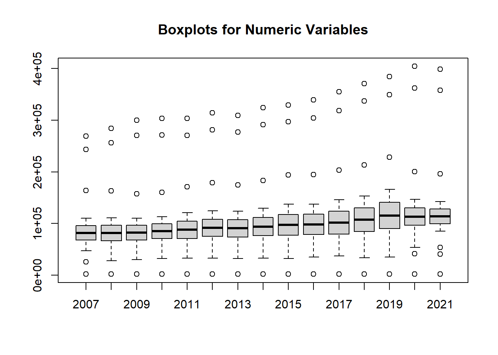

I chose the dataset “Federal, State, and Local Government Transportation-Related Revenues and Expenditures, Fiscal Year” provides financial data on transportation-related revenues and expenditures across federal, state, and local governments in the United States, measured in millions of current dollars. It includes detailed information on government revenues from user charges and taxes specifically allocated for transportation programs, as well as expenditures in this sector over multiple fiscal years. The dataset excludes general fund revenues and borrowing proceeds, focusing on own-source revenues.
The data is sourced from the U.S. Department of Transportation’s Bureau of Transportation Statistics (BTS) and is published under the National Transportation Statistics Table 3-29, available on the BTS website. This dataset is instrumental for analyzing transportation funding and government spending trends at various governmental levels.
Dataset Exploration
# Load necessary librarieslibrary(readxl) # To read Excel fileslibrary(dplyr) # For data manipulation
Attaching package: 'dplyr'
The following objects are masked from 'package:stats':
filter, lag
The following objects are masked from 'package:base':
intersect, setdiff, setequal, union
library(ggplot2) # For visualization
Warning: package 'ggplot2' was built under R version 4.3.2
# Task 2: Data Cleaning# Remove duplicates (if any)dataset <- dataset %>%distinct()# Handle missing values (remove rows with missing values or impute with mean/median if necessary)# Option 1: Remove rows with missing valuescleaned_dataset <-na.omit(dataset)# Option 2: Impute missing values with median (can also use mean if more appropriate)cleaned_dataset <- dataset %>%mutate(across(where(is.numeric), ~ifelse(is.na(.), median(., na.rm =TRUE), .)))# Check for inconsistencies or outliers using boxplots (visual inspection)boxplot(cleaned_dataset[, sapply(cleaned_dataset, is.numeric)], main ="Boxplots for Numeric Variables")

# Remove rows where the Description column is NAcleaned_dataset <- dataset %>%filter(!is.na(Description))# Convert year columns to numericcleaned_dataset[, -1] <-lapply(cleaned_dataset[, -1], as.numeric)# Check if the conversion was successfulstr(cleaned_dataset)
tibble [14 × 16] (S3: tbl_df/tbl/data.frame)
$ Description: chr [1:14] "Total government revenues" "Federal" "State and local" "Total government expenditures" ...
$ 2007 : num [1:14] 163884 53967 109917 268843 243373 ...
$ 2008 : num [1:14] 163222 52102 111120 284343 256501 ...
$ 2009 : num [1:14] 157684 47287 110397 300267 270478 ...
$ 2010 : num [1:14] 160472 47244 113227 303516 271470 ...
$ 2011 : num [1:14] 171324 50310 121014 303784 270602 ...
$ 2012 : num [1:14] 179173 54473 124699 314024 281248 ...
$ 2013 : num [1:14] 174527 50686 123841 309276 277065 ...
$ 2014 : num [1:14] 183537 54161 129376 324000 291241 ...
$ 2015 : num [1:14] 194195 56714 137481 329551 297255 ...
$ 2016 : num [1:14] 194420 57279 137141 339439 304305 ...
$ 2017 : num [1:14] 203528 57628 145900 355374 318231 ...
$ 2018 : num [1:14] 213373 60035 153338 370884 337150 ...
$ 2019 : num [1:14] 228293 62142 166150 384211 349118 ...
$ 2020 : num [1:14] 200560 53719 146842 404177 362396 ...
$ 2021 : num [1:14] 196163 53503 142660 398764 358148 ...
# Plot the distribution for one of the years, e.g., 2021hist(cleaned_dataset$`2021`, main ="Distribution of Transportation-Related Revenues/Expenditures for 2021", xlab ="Revenue/Expenditure (Millions)", breaks =20)
# Example: Create a correlation matrix to identify relationships between variablescor_matrix <-cor(cleaned_dataset %>%select(where(is.numeric)), use ="complete.obs")print(cor_matrix)